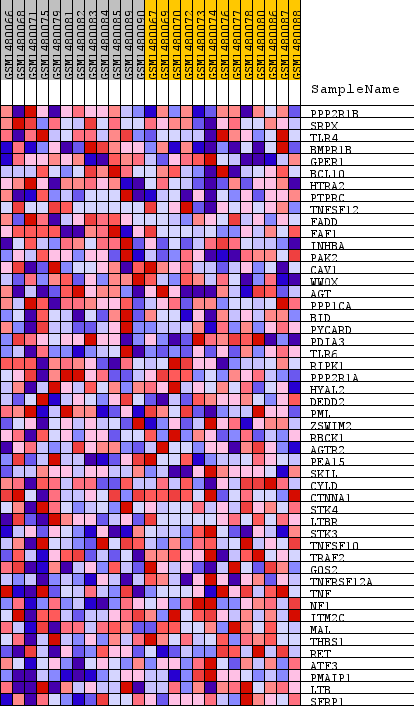
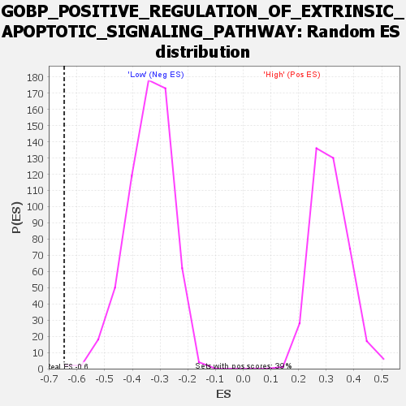

Profile of the Running ES Score & Positions of GeneSet Members on the Rank Ordered List
| Dataset | WG6v3.CPT1A.cls#High_versus_Low.CPT1A.cls#High_versus_Low_repos |
| Phenotype | CPT1A.cls#High_versus_Low_repos |
| Upregulated in class | Low |
| GeneSet | GOBP_POSITIVE_REGULATION_OF_EXTRINSIC_APOPTOTIC_SIGNALING_PATHWAY |
| Enrichment Score (ES) | -0.6463018 |
| Normalized Enrichment Score (NES) | -1.9037328 |
| Nominal p-value | 0.0016447369 |
| FDR q-value | 0.01972014 |
| FWER p-Value | 0.281 |
| SYMBOL | TITLE | RANK IN GENE LIST | RANK METRIC SCORE | RUNNING ES | CORE ENRICHMENT | |
|---|---|---|---|---|---|---|
| 1 | PPP2R1B | PPP2R1B | 1372 | 0.062 | -0.0446 | No |
| 2 | SRPX | SRPX | 1873 | 0.051 | -0.0488 | No |
| 3 | TLR4 | TLR4 | 1977 | 0.050 | -0.0331 | No |
| 4 | BMPR1B | BMPR1B | 3014 | 0.036 | -0.0714 | No |
| 5 | GPER1 | GPER1 | 3136 | 0.035 | -0.0631 | No |
| 6 | BCL10 | BCL10 | 3227 | 0.034 | -0.0535 | No |
| 7 | HTRA2 | HTRA2 | 3464 | 0.031 | -0.0525 | No |
| 8 | PTPRC | PTPRC | 3617 | 0.030 | -0.0478 | No |
| 9 | TNFSF12 | TNFSF12 | 4130 | 0.026 | -0.0634 | No |
| 10 | FADD | FADD | 5196 | 0.018 | -0.1108 | No |
| 11 | FAF1 | FAF1 | 5899 | 0.014 | -0.1410 | No |
| 12 | INHBA | INHBA | 6120 | 0.013 | -0.1468 | No |
| 13 | PAK2 | PAK2 | 6179 | 0.013 | -0.1443 | No |
| 14 | CAV1 | CAV1 | 6422 | 0.012 | -0.1517 | No |
| 15 | WWOX | WWOX | 6435 | 0.012 | -0.1473 | No |
| 16 | AGT | AGT | 6595 | 0.011 | -0.1508 | No |
| 17 | PPP1CA | PPP1CA | 7546 | 0.008 | -0.1967 | No |
| 18 | BID | BID | 7783 | 0.007 | -0.2060 | No |
| 19 | PYCARD | PYCARD | 8139 | 0.006 | -0.2219 | No |
| 20 | PDIA3 | PDIA3 | 8231 | 0.005 | -0.2244 | No |
| 21 | TLR6 | TLR6 | 8260 | 0.005 | -0.2236 | No |
| 22 | RIPK1 | RIPK1 | 8404 | 0.005 | -0.2290 | No |
| 23 | PPP2R1A | PPP2R1A | 8530 | 0.004 | -0.2336 | No |
| 24 | HYAL2 | HYAL2 | 8536 | 0.004 | -0.2319 | No |
| 25 | DEDD2 | DEDD2 | 9358 | 0.002 | -0.2735 | No |
| 26 | PML | PML | 9647 | 0.001 | -0.2880 | No |
| 27 | ZSWIM2 | ZSWIM2 | 10918 | -0.003 | -0.3523 | No |
| 28 | RBCK1 | RBCK1 | 11917 | -0.006 | -0.4013 | No |
| 29 | AGTR2 | AGTR2 | 12133 | -0.007 | -0.4095 | No |
| 30 | PEA15 | PEA15 | 12215 | -0.007 | -0.4107 | No |
| 31 | SKIL | SKIL | 12752 | -0.009 | -0.4346 | No |
| 32 | CYLD | CYLD | 13069 | -0.010 | -0.4466 | No |
| 33 | CTNNA1 | CTNNA1 | 13453 | -0.012 | -0.4611 | No |
| 34 | STK4 | STK4 | 16075 | -0.032 | -0.5829 | No |
| 35 | LTBR | LTBR | 16659 | -0.040 | -0.5963 | No |
| 36 | STK3 | STK3 | 16945 | -0.044 | -0.5924 | No |
| 37 | TNFSF10 | TNFSF10 | 17035 | -0.046 | -0.5777 | No |
| 38 | TRAF2 | TRAF2 | 18365 | -0.086 | -0.6099 | Yes |
| 39 | G0S2 | G0S2 | 18439 | -0.090 | -0.5756 | Yes |
| 40 | TNFRSF12A | TNFRSF12A | 18533 | -0.097 | -0.5397 | Yes |
| 41 | TNF | TNF | 18593 | -0.100 | -0.5005 | Yes |
| 42 | NF1 | NF1 | 18700 | -0.107 | -0.4608 | Yes |
| 43 | ITM2C | ITM2C | 18730 | -0.109 | -0.4163 | Yes |
| 44 | MAL | MAL | 18734 | -0.110 | -0.3702 | Yes |
| 45 | THBS1 | THBS1 | 18820 | -0.117 | -0.3254 | Yes |
| 46 | RET | RET | 18839 | -0.119 | -0.2762 | Yes |
| 47 | ATF3 | ATF3 | 18957 | -0.133 | -0.2262 | Yes |
| 48 | PMAIP1 | PMAIP1 | 19145 | -0.168 | -0.1651 | Yes |
| 49 | LTB | LTB | 19222 | -0.186 | -0.0908 | Yes |
| 50 | SFRP1 | SFRP1 | 19347 | -0.240 | 0.0039 | Yes |

